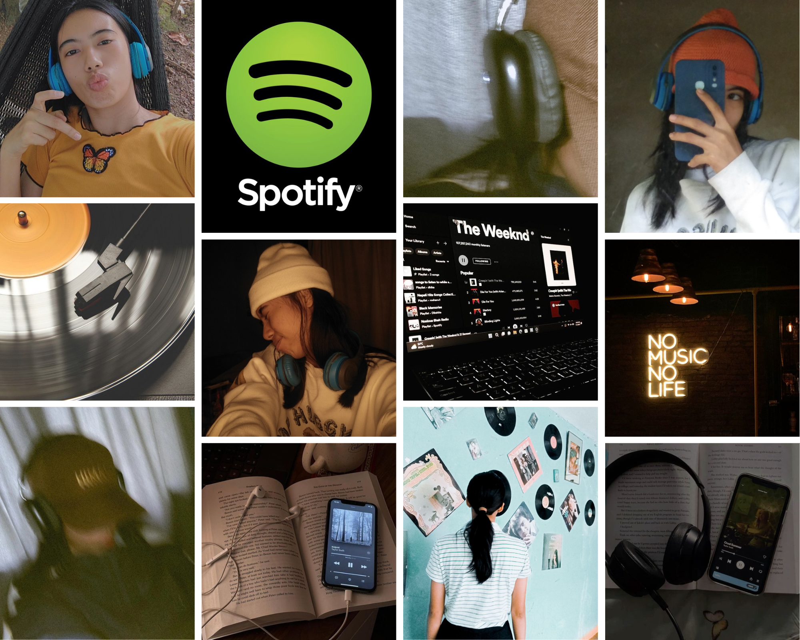
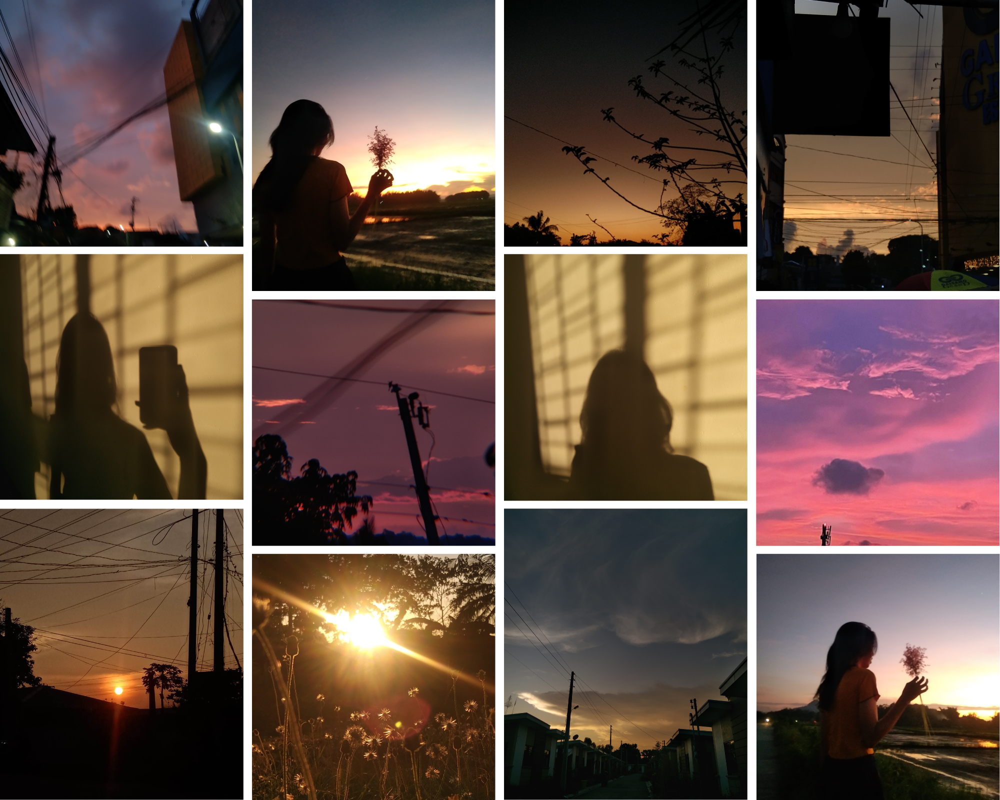

Portfolio
Nature
Being a nature lover connecting with nature can generate positive emotions like calmness, joy, and creativity. It can also help with concentration and lower levels of depression and anxiety. Getting away from your daily routine and experiencing new sensations in nature can help rejuvenate you. Inspire us in a way that connects us to each other and our environment. Nature is the art of GOD.

K-pop
I been a fans of korean pop industry because of their cultural and musical appeal. Being a fans of them K-pop's upbeat and lively nature an elevate mood and reduce stress levels. People love K-pop for its catchy music, talented performers, stunning visuals, and energitic performances. The fan communities has a global appeal that transcends language and cultural barriers.

Movie's & Series
Watching movies can allow you to escape from your troubles and be transported to another reality. To show that can be a fun and relaxing way to spend time. You may enjoy discussing the plots and characters with friends and family. Re-watching a comfort show can re-energize you and restore feelings of self-control, especially when you're feeling mentally exhausted. Life's like a movies, write your own ending.

Music
Listening to music releases endorphins, which are also known as "feel-good" chemicals. These chemicals can help you reduce pain and stress. Music can evoke a wide range of emotions, from joy to sadness. It can also be a way to regulate emotions. Music can be a powerful way to connect with others and create shared experiences and can develop a musical curation of their own time.
Sunset
Every time I see a sunset, I always take a picture of it. Sunsets can help me to relieve stress and anxiety and can create a sense of peace and calmness. The vibrant colors of a sunset can trigger the release of dopamine, which can boost mood and motivation. Sunset can create an atmosphere of emotion and richness and can help people respect nature's creative beauty. Sunsets can inspire people.
Art & Craft's
Arts and Crafts is a way to express yourself creatively and in ways that are difficult to do with other mediums. Engaging in hobbies that bring you joy can be a form of self-care. To show my ambition to make stuff like this and to improve the mental agility. While working on art and crafts, I tend to focus my mind on the project at hand, and thus it helps us increase our concentration power.